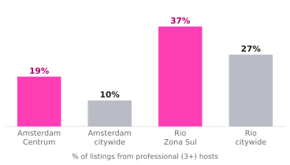

Loading the data…
Gross monthly takings at the local median entire-home rate, divided by that country's statutory monthly minimum wage. Everything stays in local currency — no FX is involved in this comparison, which is the point of using a wage as the yardstick.
Below 1.0× the listing is supplementary income. Rio sits far above it, which is why Rio attracts investor conversion — and the regulatory attention that follows it.

The places regulators moved on are the places that had professionalised fastest — roughly double the citywide rate in Amsterdam Centrum, half again in Rio's Zona Sul.
For a host, the income multiple and the regulatory risk are the same number read twice. The markets worth converting a property in are the markets where conversion is being legislated against.
Implication Rio's income multiple is the strongest result in the analysis and the most fragile. It is strong enough to attract capital, which is exactly what triggers the rule changes that would remove it.